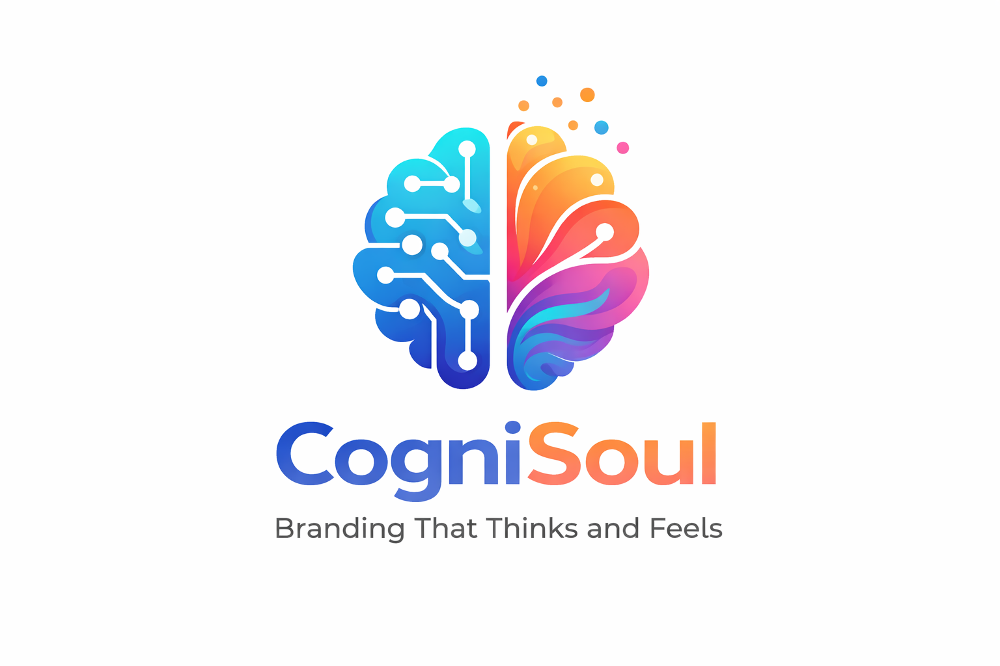

Kami membantu bisnis menerjemahkan aktivitas nyata menjadi identitas digital yang jelas, terstruktur, dan mudah ditemukan.

CogniSoul menggabungkan pemahaman manusia dan analisis berbasis AI untuk membentuk brand yang tidak hanya terlihat, tetapi juga dipahami. Setiap proses dimulai dari apa yang benar-benar terjadi di lapangan, lalu diterjemahkan menjadi narasi dan jejak digital yang terstruktur.
Kami mulai dari apa yang benar-benar Anda lakukan, bukan asumsi.
Setiap aktivitas diterjemahkan menjadi cerita yang jelas dan konsisten.
Brand Anda dibangun agar mudah ditemukan dan dipahami di dunia digital.
Kami memahami aktivitas bisnis Anda secara langsung.
Makna dari aktivitas diterjemahkan menjadi narasi brand.
AI membantu menyusun pola agar konsisten dan terukur.
Brand Anda dibangun agar terlihat dan mudah ditemukan.
Sebelum:
Tidak memiliki identitas yang jelas, konten tidak terarah, dan sulit ditemukan di digital.
Proses:
Aktivitas harian didokumentasikan, lalu diterjemahkan menjadi narasi dan konten terstruktur.
Hasil:
Brand memiliki identitas yang lebih jelas, konten konsisten, dan mulai terlihat di pencarian digital.
Kami bantu menerjemahkannya menjadi brand yang terlihat dan dipahami.
Mulai Sekarang